Chapter 8 Tree Based Algorithms
library(dplyr)##
## Attaching package: 'dplyr'## The following objects are masked from 'package:stats':
##
## filter, lag## The following objects are masked from 'package:base':
##
## intersect, setdiff, setequal, unionlibrary(ggplot2)
library(ISLR)
library(tree)8.1 Regression trees
library(fueleconomy)
data(mpg)
str(mpg)## Classes 'tbl_df', 'tbl' and 'data.frame': 234 obs. of 11 variables:
## $ manufacturer: chr "audi" "audi" "audi" "audi" ...
## $ model : chr "a4" "a4" "a4" "a4" ...
## $ displ : num 1.8 1.8 2 2 2.8 2.8 3.1 1.8 1.8 2 ...
## $ year : int 1999 1999 2008 2008 1999 1999 2008 1999 1999 2008 ...
## $ cyl : int 4 4 4 4 6 6 6 4 4 4 ...
## $ trans : chr "auto(l5)" "manual(m5)" "manual(m6)" "auto(av)" ...
## $ drv : chr "f" "f" "f" "f" ...
## $ cty : int 18 21 20 21 16 18 18 18 16 20 ...
## $ hwy : int 29 29 31 30 26 26 27 26 25 28 ...
## $ fl : chr "p" "p" "p" "p" ...
## $ class : chr "compact" "compact" "compact" "compact" ...t <- tree( cty ~ displ + year + cyl + trans + drv, data=mpg)## Warning in tree(cty ~ displ + year + cyl + trans + drv, data = mpg): NAs
## introduced by coercionplot(t); text(t)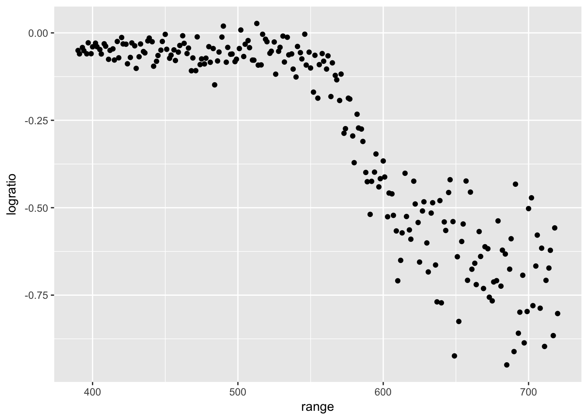
Branch lengths are proportional to the decrease in impurity of the leaf.
We can force the branch lengths to be the same on the graph.
plot(t, type='uniform'); text(t)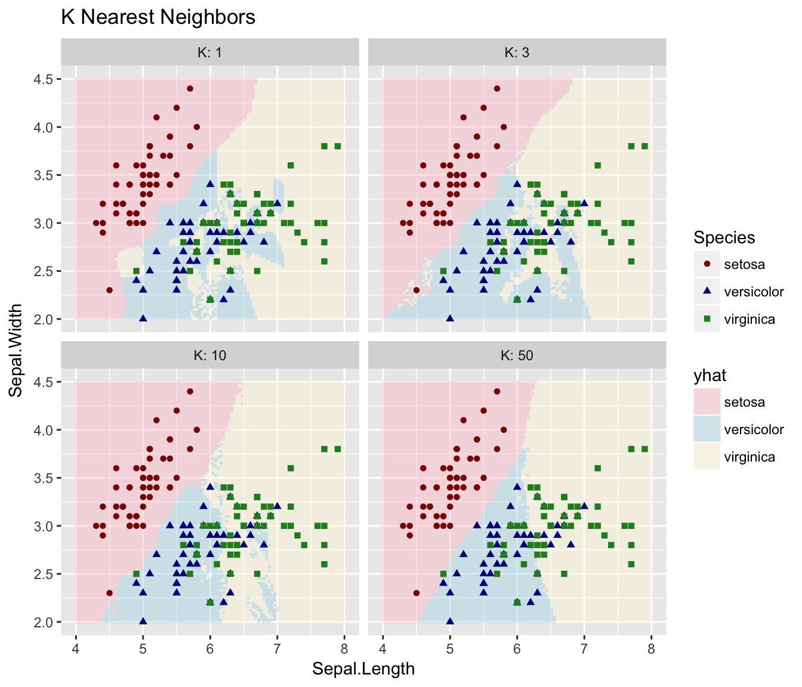
Another example… prostate cancer data
library(faraway)
t <- tree ( lpsa ~ ., data=prostate )
plot(t); text(t)
Another exmple… CPU performance
data(cpus, package="MASS")
cpus.ltr <- tree(log10(perf) ~ syct+mmin+mmax+cach+chmin+chmax, cpus)
cpus.ltr## node), split, n, deviance, yval
## * denotes terminal node
##
## 1) root 209 43.12000 1.753
## 2) cach < 27 143 11.79000 1.525
## 4) mmax < 6100 78 3.89400 1.375
## 8) mmax < 1750 12 0.78430 1.089 *
## 9) mmax > 1750 66 1.94900 1.427 *
## 5) mmax > 6100 65 4.04500 1.704
## 10) syct < 360 58 2.50100 1.756
## 20) chmin < 5.5 46 1.22600 1.699 *
## 21) chmin > 5.5 12 0.55070 1.974 *
## 11) syct > 360 7 0.12910 1.280 *
## 3) cach > 27 66 7.64300 2.249
## 6) mmax < 28000 41 2.34100 2.062
## 12) cach < 96.5 34 1.59200 2.008
## 24) mmax < 11240 14 0.42460 1.827 *
## 25) mmax > 11240 20 0.38340 2.135 *
## 13) cach > 96.5 7 0.17170 2.324 *
## 7) mmax > 28000 25 1.52300 2.555
## 14) cach < 56 7 0.06929 2.268 *
## 15) cach > 56 18 0.65350 2.667 *summary(cpus.ltr)##
## Regression tree:
## tree(formula = log10(perf) ~ syct + mmin + mmax + cach + chmin +
## chmax, data = cpus)
## Variables actually used in tree construction:
## [1] "cach" "mmax" "syct" "chmin"
## Number of terminal nodes: 10
## Residual mean deviance: 0.03187 = 6.342 / 199
## Distribution of residuals:
## Min. 1st Qu. Median Mean 3rd Qu. Max.
## -0.4945000 -0.1191000 0.0003571 0.0000000 0.1141000 0.4680000plot(cpus.ltr); text(cpus.ltr)
Build a much bigger tree
# mindev = within node deviance must be larger than this (relative to root node deviance)
# to be eligible to be split. So smaller mindev -> allowed to split nodes even
# when the decrease in deviance is small.
cpus.ltr <- tree(log10(perf) ~ syct+mmin+mmax+cach+chmin+chmax, cpus,
mindev=.001)
plot(cpus.ltr)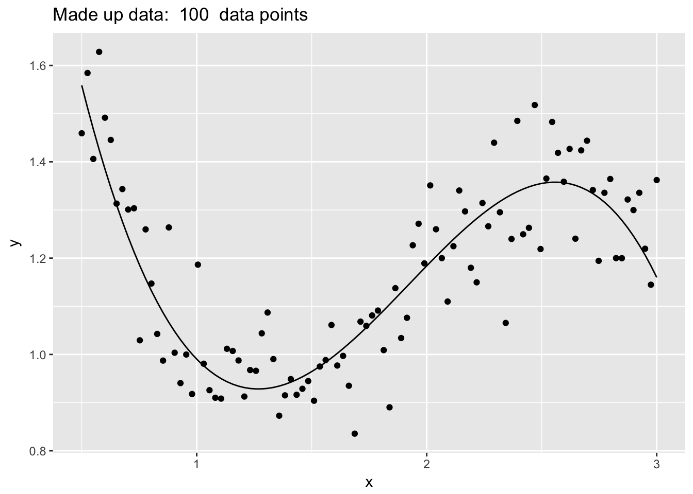
t.small <- prune.tree(cpus.ltr, best=5)
plot(t.small); text(t.small)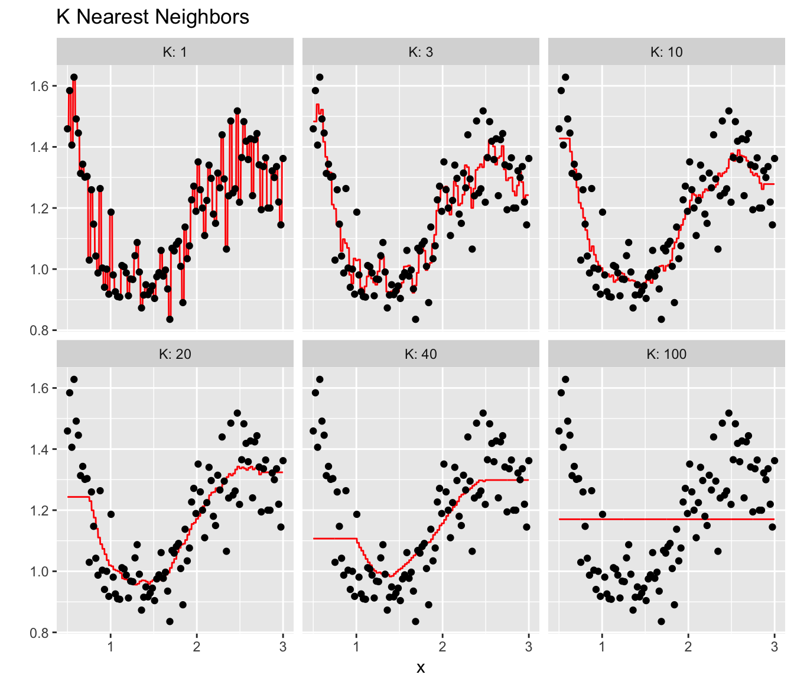
t <- tree( price ~ carat+cut+color+clarity, data=diamonds )
plot(t)
text(t)
t.small <- prune.tree(t, best=5)
plot(t.small)
text(t.small)t.small <- prune.tree(t, best=6)
plot(t.small)
text(t.small)How large a tree should we use? Cross-Validation!
set.seed(5730)
train <- diamonds %>% sample_frac(.5)
test <- setdiff(diamonds, train)
t <- tree( price ~ ., data=train )
cv.result <- cv.tree(t, K=10)
plot(cv.result)t.small <- prune.tree(t, best=4)
plot(t.small)
text(t.small) 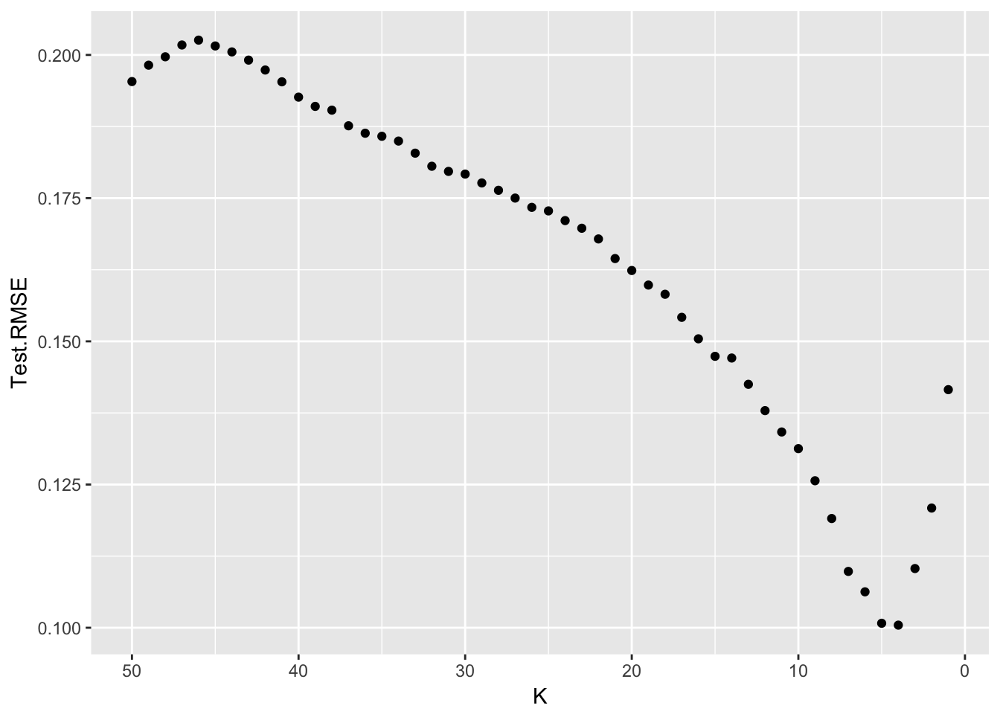
8.2 Classification trees
Classification trees work identically to regression trees, only with a different measure of node purity.
str(Carseats)## 'data.frame': 400 obs. of 11 variables:
## $ Sales : num 9.5 11.22 10.06 7.4 4.15 ...
## $ CompPrice : num 138 111 113 117 141 124 115 136 132 132 ...
## $ Income : num 73 48 35 100 64 113 105 81 110 113 ...
## $ Advertising: num 11 16 10 4 3 13 0 15 0 0 ...
## $ Population : num 276 260 269 466 340 501 45 425 108 131 ...
## $ Price : num 120 83 80 97 128 72 108 120 124 124 ...
## $ ShelveLoc : Factor w/ 3 levels "Bad","Good","Medium": 1 2 3 3 1 1 3 2 3 3 ...
## $ Age : num 42 65 59 55 38 78 71 67 76 76 ...
## $ Education : num 17 10 12 14 13 16 15 10 10 17 ...
## $ Urban : Factor w/ 2 levels "No","Yes": 2 2 2 2 2 1 2 2 1 1 ...
## $ US : Factor w/ 2 levels "No","Yes": 2 2 2 2 1 2 1 2 1 2 ...# make a categorical response out of Sales
Carseats <- Carseats %>%
mutate( High = factor(ifelse(Sales >= 8, 'High','Low')))Now we fit the tree using exactly the same syntax as before
my.tree <- tree( High ~ ., Carseats)
plot(my.tree)
text(my.tree)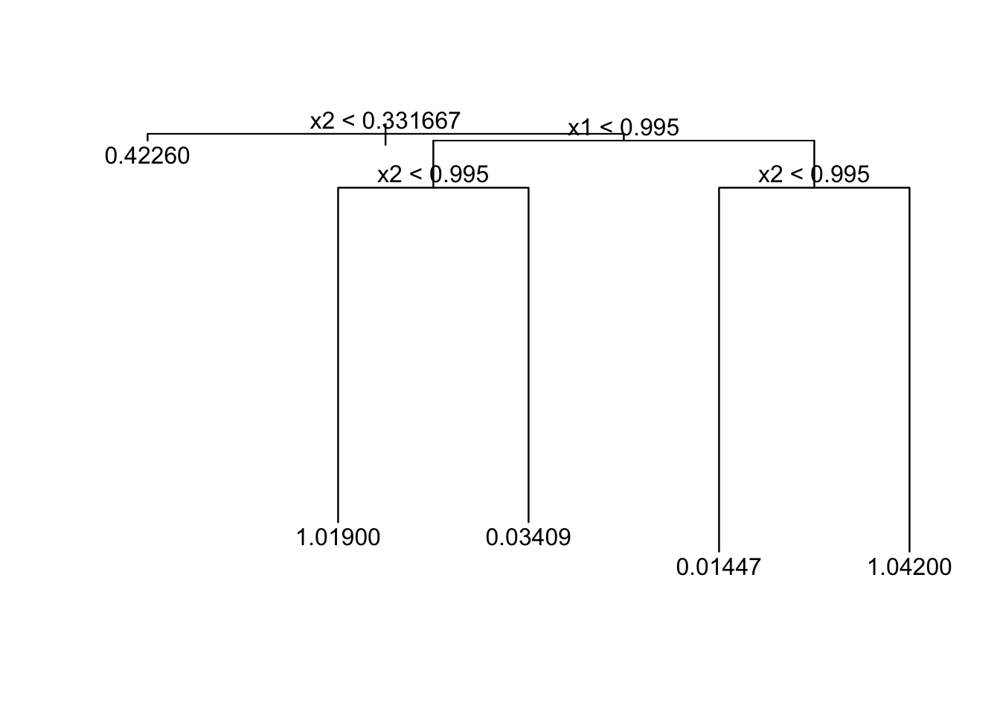
Silly us, there is clearly a best predictor in our data… Sales! The variable we used to create our categorical response variable.
my.tree <- tree( High ~ . - Sales, Carseats)
plot(my.tree)
text(my.tree, pretty=0)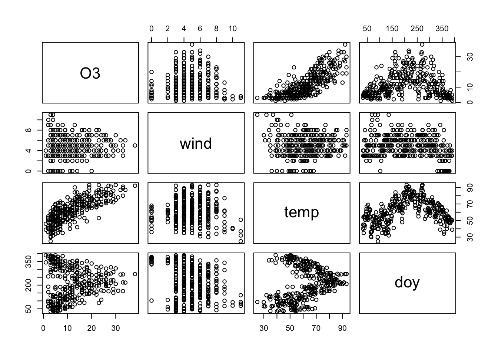
plot(my.tree, type='uniform')
text(my.tree, pretty=0)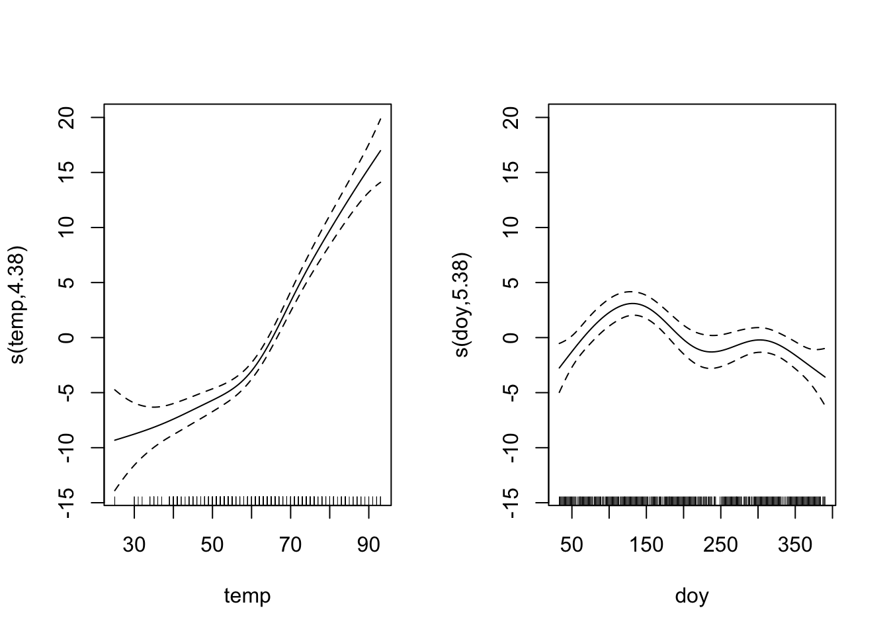
This is a very complex tree and is probably overfitting the data. Lets use cross-validation to pick the best size tree.
set.seed(345)
# Start with the overfit tree
my.tree <- tree( High ~ . - Sales, Carseats)
# then prune using 10 fold CV where we assess on the misclassification rate
cv.tree <- cv.tree( my.tree, FUN=prune.misclass, K=10)
cv.tree## $size
## [1] 27 26 24 22 19 17 14 12 7 6 5 3 2 1
##
## $dev
## [1] 104 105 105 101 101 97 99 91 97 99 94 98 117 165
##
## $k
## [1] -Inf 0.000000 0.500000 1.000000 1.333333 1.500000 1.666667
## [8] 2.500000 3.800000 4.000000 5.000000 7.500000 18.000000 47.000000
##
## $method
## [1] "misclass"
##
## attr(,"class")
## [1] "prune" "tree.sequence"cv.tree$size[ which.min(cv.tree$dev) ]## [1] 12# So the best tree (according to CV) has 12 leaves.# What if we prune using the deviance aka the Gini measure?
cv.tree <- cv.tree( my.tree )
cv.tree## $size
## [1] 27 26 25 24 23 22 21 20 19 17 16 14 12 11 9 8 7 6 4 3 2 1
##
## $dev
## [1] 826.9589 836.7638 836.0794 840.6605 840.2832 828.8401 828.8401
## [8] 701.3998 685.5561 665.2928 637.3993 606.2272 594.3136 563.1075
## [15] 548.7791 513.5985 500.2839 487.9836 485.8734 493.5000 497.5779
## [22] 546.9277
##
## $k
## [1] -Inf 5.487169 5.554986 5.883875 6.356830 6.770937 6.916241
## [8] 8.707541 8.849556 9.632187 9.850997 10.464072 11.246703 11.739662
## [15] 11.948400 13.135354 14.313015 18.992527 21.060122 24.699537 34.298711
## [22] 60.567546
##
## $method
## [1] "deviance"
##
## attr(,"class")
## [1] "prune" "tree.sequence"cv.tree$size[ which.min(cv.tree$dev) ]## [1] 4# The best here has 3 leaves.# Prune based on deviance
pruned.tree <- prune.tree( my.tree, best=12 )
plot(pruned.tree);
text(pruned.tree, pretty=0)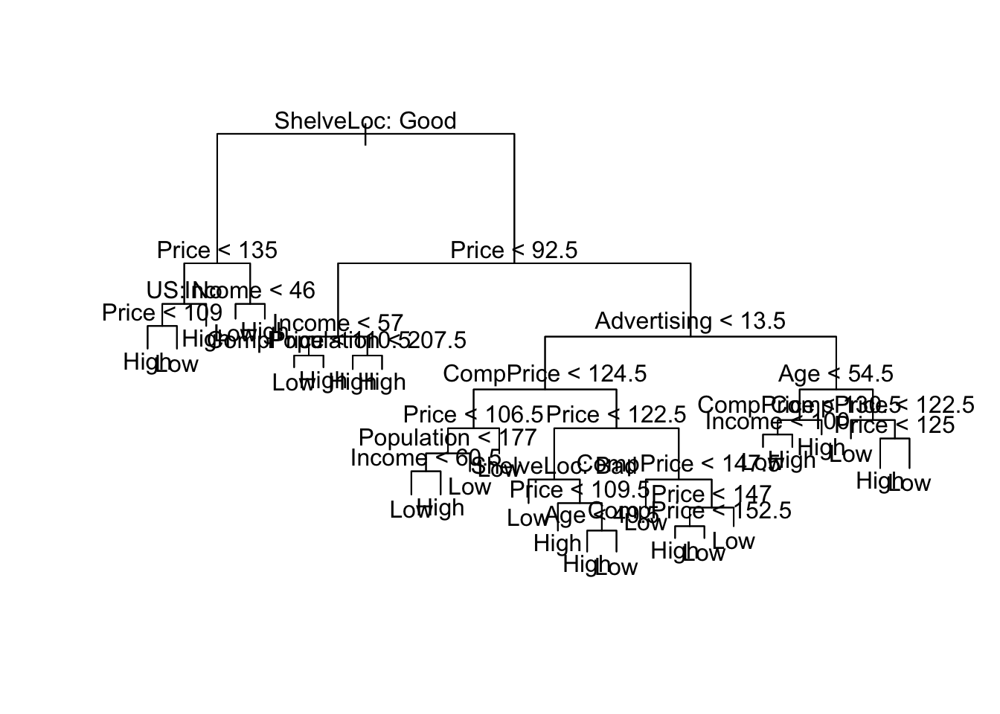
summary(pruned.tree)##
## Classification tree:
## snip.tree(tree = my.tree, nodes = c(30L, 5L, 119L, 6L, 56L, 235L,
## 4L, 31L))
## Variables actually used in tree construction:
## [1] "ShelveLoc" "Price" "Advertising" "CompPrice" "Age"
## Number of terminal nodes: 12
## Residual mean deviance: 0.7673 = 297.7 / 388
## Misclassification error rate: 0.1625 = 65 / 400# Prune based on misclassification
pruned.tree <- prune.tree( my.tree, best=12, method='misclas' )
plot(pruned.tree);
text(pruned.tree, pretty=0)summary(pruned.tree)##
## Classification tree:
## snip.tree(tree = my.tree, nodes = c(13L, 30L, 5L, 12L, 28L, 4L,
## 59L, 31L))
## Variables actually used in tree construction:
## [1] "ShelveLoc" "Price" "Income" "Advertising" "CompPrice"
## [6] "Age"
## Number of terminal nodes: 12
## Residual mean deviance: 0.7832 = 303.9 / 388
## Misclassification error rate: 0.14 = 56 / 400# Prune based on misclassification
pruned.tree2 <- prune.tree( my.tree, best=7, method='misclas' )
plot(pruned.tree2);
text(pruned.tree, pretty=0)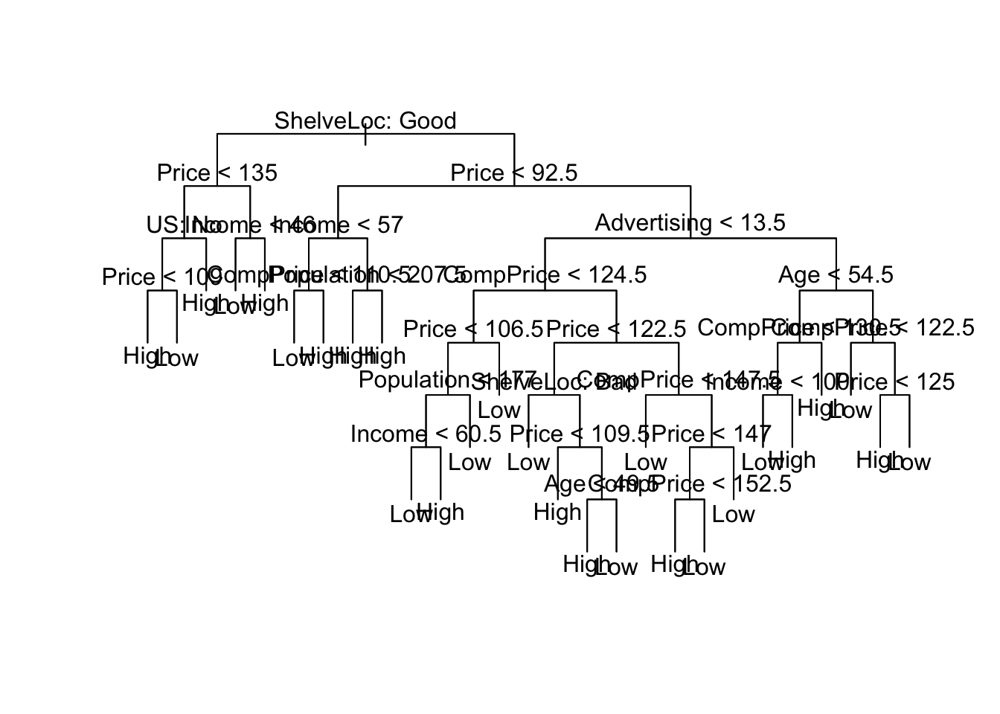
summary(pruned.tree2)##
## Classification tree:
## snip.tree(tree = my.tree, nodes = c(13L, 30L, 5L, 12L, 4L, 31L,
## 14L))
## Variables actually used in tree construction:
## [1] "ShelveLoc" "Price" "Income" "Advertising" "Age"
## Number of terminal nodes: 7
## Residual mean deviance: 0.9663 = 379.8 / 393
## Misclassification error rate: 0.1875 = 75 / 4008.3 Bagging
What is the variability tree to tree? What happens if we have different data? What if I had a different 400 observations drawn from the population?
data.star <- Carseats %>% sample_frac(replace=TRUE)
my.tree <- tree(High ~ . -Sales, data=data.star)
cv.tree <- cv.tree( my.tree, FUN=prune.misclass, K=10)
size <- cv.tree$size[ which.min(cv.tree$dev) ]
pruned.tree <- prune.tree( my.tree, best=size, method='misclas' )
plot(pruned.tree)#text(pruned.tree, pretty=0)These are highly variable! Lets us bagging to reduce variability…
library(randomForest)## randomForest 4.6-12## Type rfNews() to see new features/changes/bug fixes.##
## Attaching package: 'randomForest'## The following object is masked from 'package:ggplot2':
##
## margin## The following object is masked from 'package:dplyr':
##
## combinebagged <- randomForest( High ~ . - Sales, data=Carseats,
mtry=10, # Number of covariates to use in each tree
imporance=TRUE, # Assess the importance of each covariate
ntree = 500) # number of trees to grow
bagged##
## Call:
## randomForest(formula = High ~ . - Sales, data = Carseats, mtry = 10, imporance = TRUE, ntree = 500)
## Type of random forest: classification
## Number of trees: 500
## No. of variables tried at each split: 10
##
## OOB estimate of error rate: 19%
## Confusion matrix:
## High Low class.error
## High 116 48 0.2926829
## Low 28 208 0.1186441What are the most important predictors?
importance(bagged)## MeanDecreaseGini
## CompPrice 24.3272828
## Income 18.2571468
## Advertising 21.8537267
## Population 11.3755784
## Price 51.4371819
## ShelveLoc 35.9214757
## Age 20.1961257
## Education 6.6399499
## Urban 0.7463221
## US 2.4785000varImpPlot(bagged)
8.4 Random Forests where we select a different number of predictors
p <- 10
r.forest <- randomForest( High ~ . - Sales, data=Carseats,
mtry=p/2, # Number of covariates to use in each tree
imporance=TRUE, # Assess the importance of each covariate
ntree = 500) # number of trees to grow
r.forest##
## Call:
## randomForest(formula = High ~ . - Sales, data = Carseats, mtry = p/2, imporance = TRUE, ntree = 500)
## Type of random forest: classification
## Number of trees: 500
## No. of variables tried at each split: 5
##
## OOB estimate of error rate: 20%
## Confusion matrix:
## High Low class.error
## High 109 55 0.3353659
## Low 25 211 0.10593228.5 Boosting
library(gbm) # generalized boost models## Loading required package: survival##
## Attaching package: 'survival'## The following object is masked from 'package:faraway':
##
## rats## Loading required package: lattice##
## Attaching package: 'lattice'## The following object is masked from 'package:faraway':
##
## melanoma## Loading required package: splines## Loading required package: parallel## Loaded gbm 2.1.3boost <- gbm(High ~ . - Sales,
data=Carseats %>% mutate(High = as.integer(High)-1), # wants {0,1}
distribution = 'bernoulli', # use gaussian for regression trees
interaction.depth = 2, n.trees = 2000, shrinkage=.01 )
summary(boost)## var rel.inf
## Price Price 28.1086622
## ShelveLoc ShelveLoc 21.1310250
## CompPrice CompPrice 14.8511548
## Advertising Advertising 12.9798309
## Age Age 9.8908060
## Income Income 8.4823546
## Population Population 2.4097468
## Education Education 1.5514692
## Urban Urban 0.3554677
## US US 0.2394828Ok, so we have a bunch of techniques so it will pay to investigate how well they predict.
results <- NULL
for( i in 1:200){
temp <- Carseats %>% dplyr::select(-Sales)
test <- temp %>% sample_frac(.5)
train <- setdiff(temp, test)
my.tree <- tree( High ~ ., data=train)
cv.tree <- cv.tree( my.tree, FUN=prune.misclass, K=10)
num.leaves <- cv.tree$size[which.min(cv.tree$dev)]
pruned.tree <- prune.tree( my.tree, best=num.leaves, method='misclas' )
yhat <- predict(pruned.tree, newdata=test, type='class')
results <- rbind(results, data.frame(misclass=mean( yhat != test$High ),
type='CV-Prune'))
bagged <- randomForest( High ~ ., data=train, mtry=p)
yhat <- predict(bagged, newdata=test, type='class')
results <- rbind(results, data.frame(misclass=mean( yhat != test$High ),
type='Bagged'))
RF <- randomForest( High ~ ., data=train, mtry=p/2)
yhat <- predict(RF, newdata=test, type='class')
results <- rbind(results, data.frame(misclass=mean( yhat != test$High ),
type='RF - p/2'))
RF <- randomForest( High ~ ., data=train, mtry=sqrt(p))
yhat <- predict(RF, newdata=test, type='class')
results <- rbind(results, data.frame(misclass=mean( yhat != test$High ),
type='RF - sqrt(p)'))
boost <- gbm(High ~ .,
data=train %>% mutate(High = as.integer(High)-1), # wants {0,1}
distribution = 'bernoulli', # use gaussian for regression trees
interaction.depth = 2, n.trees = 2000, shrinkage=.01 )
yhat <- predict(boost, newdata=test, n.trees=2000, type='response')
results <- rbind(results, data.frame(misclass=mean( round(yhat) != as.integer(test$High)-1 ),
type='Boosting'))
}ggplot(results, aes(x=misclass, y=..density..)) +
geom_histogram(binwidth=0.02) +
facet_grid(type ~ .)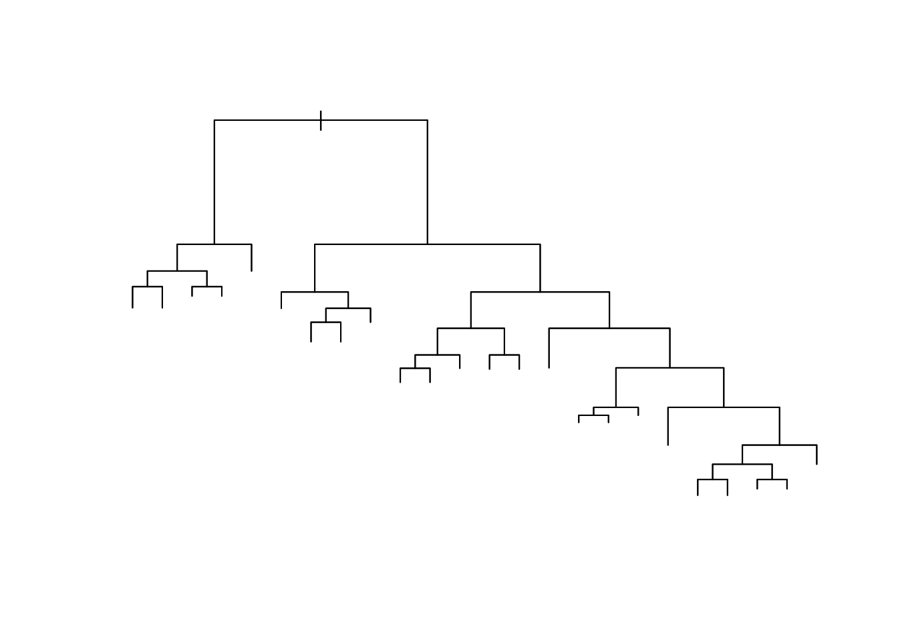
results %>% group_by( type ) %>%
summarise( mean.misclass = mean(misclass),
sd.misclass = sd(misclass))## # A tibble: 5 x 3
## type mean.misclass sd.misclass
## <fctr> <dbl> <dbl>
## 1 CV-Prune 0.273225 0.03420636
## 2 Bagged 0.205975 0.02880230
## 3 RF - p/2 0.199450 0.02815869
## 4 RF - sqrt(p) 0.197125 0.02690219
## 5 Boosting 0.157025 0.022651498.6 Exercises
ISLR #8.1 Draw an example (of your own invention) of a partition of a two dimensional feature space that could result from recursive binary splitting. Your example should contain at least six regions. Draw a decision tree corresponding to this partition. Be sure to label all aspects of your figures, including the regions \(R_1, R_2, \dots\), the cutpoints \(t_1, t_2, \dots\), and so forth.
ISLR #8.3. Consider the Gini index, classification error, and cross-entropy in a simple classification setting with two classes. Create a single plot that displays each of these quantities as a function of \(\hat{p}_{m1}\). The \(x\)-axis should display \(\hat{p}_{m1}\), ranging from \(0\) to \(1\), and the \(y\)-axis should display the value of the Gini index, classification error, and entropy.
- ISLR #8.4 This question relates to the plots in Figure 8.12.
- Sketch the tree corresponding to the partition of the predictor space illustrated in the left-hand panel of Figure 8.12. The numbers inside the boxes indicate the mean of \(Y\) within each region.
- Create a diagram similar to the left-hand panel of Figure 8.12, using the tree illustrated in the right-hand panel of the same figure. You should divide up the predictor space into the correct regions, and indicate the mean for each region.
- ISLR #8.8 In the lab, a classification tree was applied to the
Carseatsdata set after convertingSalesinto a qualitative response variable. Now we will seek to predictSalesusing regression trees and related approaches, treating the response as a quantitative variable.Split the data set into a training set and a test set.
set.seed(9736) train <- Carseats %>% sample_frac(0.5) test <- setdiff(Carseats, train)- Fit a regression tree to the training set. Plot the tree, and interpret the results. What test error rate do you obtain?
- Use cross-validation in order to determine the optimal level of tree complexity. Does pruning the tree improve the test error rate?
- Use the bagging approach in order to analyze this data. What test error rate do you obtain? Use the
importance()function to determine which variables are most important. - Use random forests to analyze this data. What test error rate do you obtain? Use the
importance()function to determine which variables are most important. Describe the effect of \(m\), the number of variables considered at each split, on the error rate obtained. Use boosting to analyze this data. What test error rate do you obtain? Describe the effect of \(d\), the number of splits per step. Also describe the effect of changing \(\lambda\) from 0.001, 0.01, and 0.1.